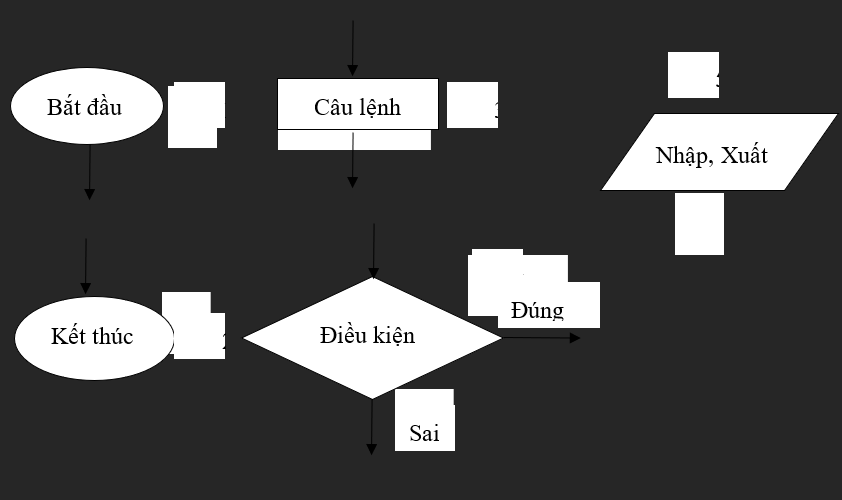

BÀI 1: LẬP TRÌNH CƠ BẢN
Khái niệm về thuật toán, cách biểu diễn thuật toán, các khái niệm cơ bản, cấu trúc của một chương trình C, các kiểu dữ liệu cơ sở trong C và các phép toán trên các kiểu dữ liệu đó. Bài 1 cũng giới thiệu các lệnh đơn giản như khai báo biến, hằng, lệnh gán, nhập xuất giúp chúng ta có thể bắt đầu tự viết những chương trình tính toán đơn giản; cũng như, tập trung trình bày chi tiết câu lệnh điều kiện if…else, câu lệnh rẽ nhánh switch đồng thời so sánh đặc điểm giữa hai câu lệnh nhằm giúp lập trình viên có thể lựa chọn câu lệnh phù hợp với từng trường hợp. Trong phần cuối Bài sẽ lần lượt trình bày 3 câu lệnh lặp với những tính năng khác nhau để có thể sử dụng linh hoạt trong từng trường hợp cụ thể.
1.1 Thuật toán
1.1.1 Khái niệm
Thuật toán hay giải thuật là một hệ thống chặt chẽ và rõ ràng các quy
tắc nhằm xác định một dãy các thao tác trên những đối tượng, sao cho sau
một số hữu hạn bước thực hiện các thao tác thì cho kết quả.
Từ thuật toán (Algorithm) xuất phát từ tên một nhà toán học người Trung
Á là Abu Abd - Allah ibn Musa al’Khwarizmi, thường gọi là al’Khwarizmi.
Ông là tác giả một cuốn sách về số học, trong đó ông đã dùng phương pháp
mô tả rất rõ ràng, mạch lạc cách giải những bài toán. Sau này, phương
pháp mô tả cách giải toán của ông đã được xem là một chuẩn mực và được
nhiều nhà toán học khác tuân theo. Từ algorithm ra đời dựa theo cách
phiên âm tên của ông.
1.1.2 Các đặc trưng của thuật toán
-
Tính xác định: Giải thuật bao gồm các bước rõ ràng. Trong cùng một điều kiện thì kết quả của mỗi bước là xác định.
-
Tính hữu hạn dừng: Giải thuật sau một số hữu hạn bước thì cho kết quả.Tính đúng đắn: Sau khi thực hiện các bước của giải thuật phải cho được kết quả mong muốn, kết quả đó được xác định theo định nghĩa có trước.
-
Tính tổng quát: Thuật toán có tính tổng quát là thuật toán phải áp dụng được cho mọi trường hợp của bài toán chứ không phải chỉ áp dụng được cho một số trường hợp riêng lẻ nào đó. Chẳng hạn giải phương trình bậc hai sau đây bằng Delta đảm bảo được tính chất này vì nó luôn giải được với mọi giá trị số thực a,b,c bất kỳ. Tuy nhiên, không phải thuật toán nào cũng đảm bảo được tính tổng quát. Trong thực tế, có lúc người ta chỉ xây dựng thuật toán cho một dạng đặc trưng của bài toán mà thôi.
-
Tính có đại lượng vào và ra: Bắt đầu một giải thuật là việc nhận dữ liệu vào (Input) – kết thúc giải thuật là một số kết quả dữ liệu ra (Output).
-
Tính hiệu quả: Tính hiệu quả của một giải thuật được đánh giá dựa trên các tiêu chuẩn sau:
-
Dung lượng bộ cần thiết
-
Số lượng phép tính cần thực hiện.
-
Thời gian cần thiết để chạy.
-
Dễ hiểu và dễ cài đặt.
-
1.1.3 Biểu diễn thuật toán
Sử dụng các ký hiệu hình khối cơ bản để tạo thành một mô tả mang tính hình thức (cách này rõ ràng hơn so với việc mô tả các bước thực hiện thuật toán).
-
Khối 1: Khối bắt đầu thuật toán, chỉ có duy nhất một đường ra.
-
Khối 2: Khối kết thúc thuật toán, có thể có nhiều đường vào.
-
Khối 3: Thực hiện câu lệnh (có thể là một hoặc nhiều câu lệnh) gồm một đường vào và một đường ra.
-
Khối 4: Rẽ nhánh, kiểm tra biểu thức điều kiện (biểu thức Boolean), nếu biểu thức đúng thuật toán sẽ đi theo nhánh Đúng (True), nếu biểu thức sai thuật toán sẽ đi theo nhánh Sai (False).
-
Khối 5: Các câu lệnh nhập và xuất dữ liệu.
1.2 Khái niệm thuật toán
1.2.1 Tập các ký hiệu của ngôn ngữ C
Mọi ngôn ngữ lập trình đều được xây dựng từ một bộ ký tự nào đó. Các ký
tự được nhóm lại theo nhiều cách khác nhau để tạo nên các từ. Các từ lại
được liên kết với nhau theo một qui tắc nào đó để tạo nên các câu lệnh.
Một chương trình (CHƯƠNG TRÌNH) bao gồm nhiều câu lệnh và thể hiện một
thuật toán để giải một bài toán nào đó. Ngôn ngữ C được xây dựng trên bộ
ký tự sau:
26 chữ cái hoa: A B C .. Z
26 chữ cái thường: a b c .. z
10 chữ số: 0 1 2 ... 9
Các ký hiệu toán học: + - * / = ( )
Ký tự gạch nối: _
Các ký tự khác: . , : ; [ ] {} ! \ & % # $ ...
Dấu cách (space) dùng để tách các từ. Ví dụ chữ VIET NAM có 8 ký tự, còn
VIETNAM chỉ có 7 ký tự.